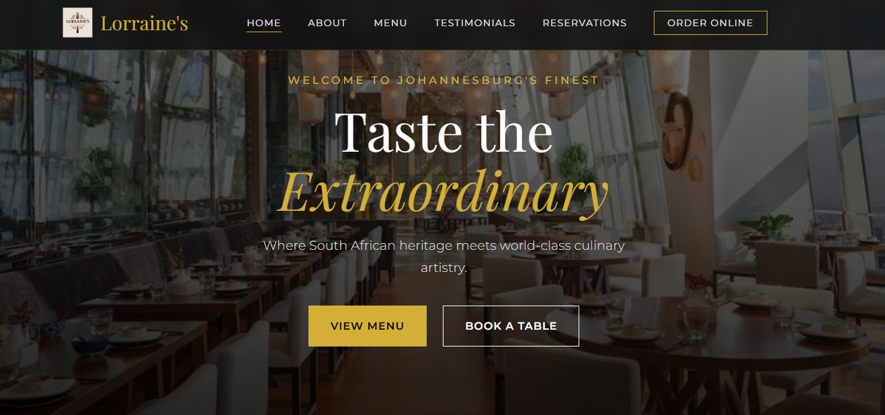
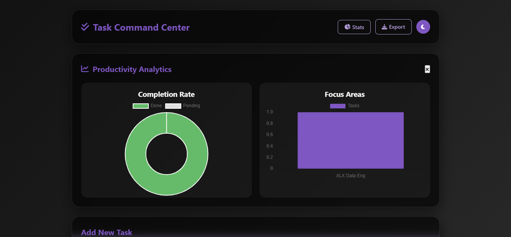
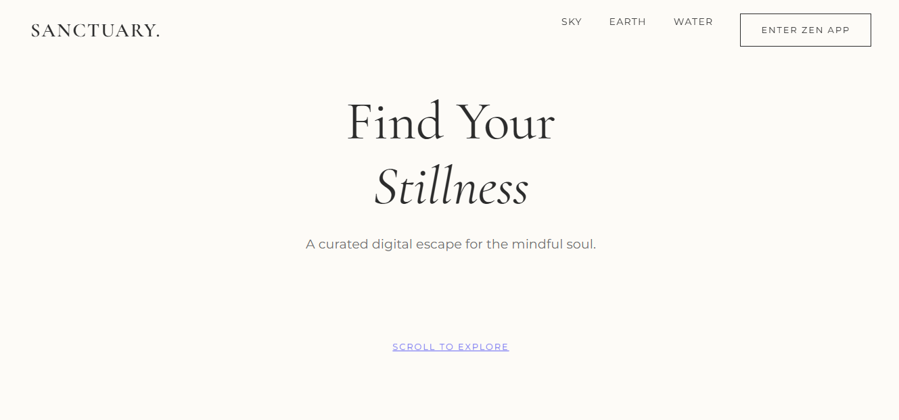

The Defensive Edge: Becoming ALX Certified
Reflecting on the milestone of earning my Cybersecurity certification and how it hardens my approach to Data Engineering.
Read Story
Hi, I'm Khwatsi Faith Chauke.
I am a Creative Engineer specializing in
Data Engineering and Cybersecurity.
I build high-integrity systems that are data-driven by nature and
protected by design.
Creative Engineer 🇿🇦
I am a
Data Engineering and Cybersecurity specialist
certified by ALX. My work focuses on the lifecycle of data—from
ingestion and transformation to securing the infrastructure it lives
on.
My edge? I combine the Data Brain for scalable ETL
pipelines with a Security Mindset to identify
vulnerabilities before they become threats. I bridge the gap between
complex data logic and hardened defensive security.
Designing ETL pipelines and managing SQL databases. I transform raw data into structured, actionable insights.
Implementing defensive strategies and security audits to ensure platform integrity and data privacy across cloud and on-premise environments.
Crafting intuitive user interfaces. I bridge the gap between technical functionality and human experience.

The Logic: Engineered a Supabase (PostgreSQL)
backend with strict Row Level Security (RLS) to manage bookings
and protect client PII.
The Art: A luxury, dark-theme glassmorphism UI
featuring fluid Framer Motion animations and an immersive gallery.

The Logic: A robust Django backend managing
real-time cart data and SQL reservations.
The Art: A mobile-first, appetizing UI designed
for seamless ordering.

The Logic: Secure user authentication and CRUD
operations using Flask.
The Art: A distraction-free, minimalist interface
to boost user focus.

The Logic: Dynamic DOM manipulation and Audio API
integration.
The Art: An immersive, calming environment
crafted with CSS animations.
"It is rare to find a developer who cares this much about the user experience. Khwatsi didn't just build the backend for our reservation system; she designed an interface that made it a joy to use. She truly bridges the gap between logic and beauty."
"Her ability to absorb complex concepts—from Data Engineering pipelines to Cybersecurity protocols—and immediately apply them is impressive. Khwatsi brings a level of discipline and curiosity that makes her an asset to any technical team."
Reflecting on the milestone of earning my Cybersecurity certification and how it hardens my approach to Data Engineering.
Read StoryTaking on Cybersecurity and Data Engineering simultaneously: Why I chose excitement over comfort.
Read StoryFrom dreading the course to redefining my identity: How I found the title "Creative Engineer."
Read StoryMy key takeaways from the Johannesburg Amazon Summit and the power of cloud computing.
Read StoryReflecting on my 9-week journey from "Hello World" to full-stack deployment.
Read StoryHow I solved the cart logic challenge while maintaining a sleek UI design.
Read Story